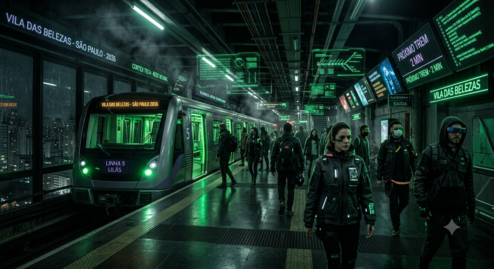
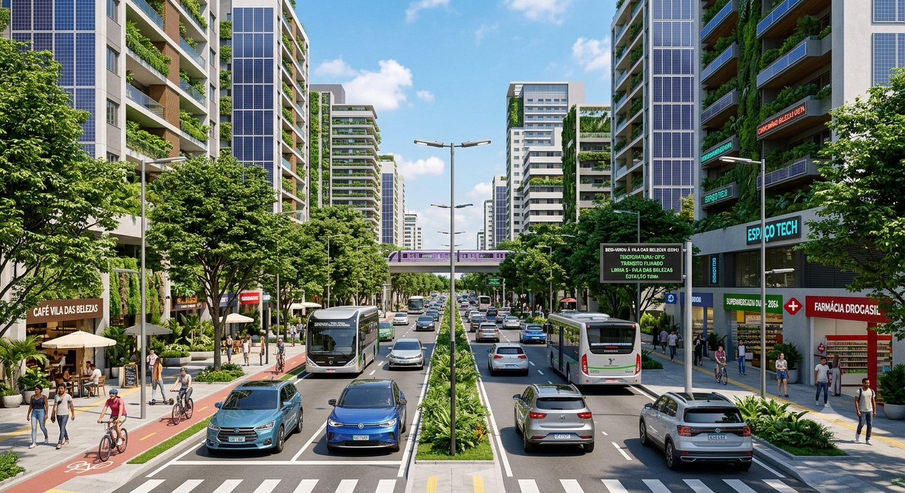

Estação Vila das Belezas
Como é hoje: Uma estação simples da CPTM, movimentada, sem muito conforto ou tecnologia.
Como imagino em 2035: Uma estação com painéis holográficos, luzes neon, plataformas automatizadas e visual inspirado no filme Matrix.

Ver no Google Maps
Estrada de Itapecerica
Como é hoje: Uma avenida movimentada com carros a combustão, ônibus e muito trânsito entre Santo Amaro e Campo Limpo.
Como imagino em 2035: Carros elétricos silenciosos, calçadas arborizadas, iluminação LED e painéis solares nos prédios.

Ver no Google Maps